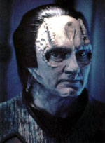
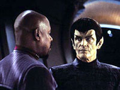
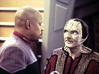
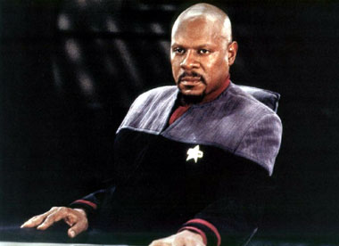
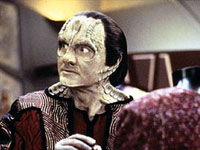
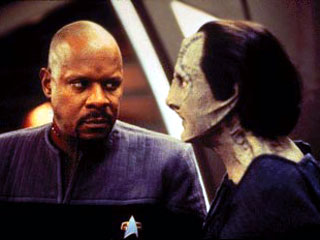

MANCHETE
DO EPISÓDIO
"Crime
de Sisko" traz parte sombria do capitão em episódio
sensacional
Episódio
anterior | Próximo episódio
Sinopse:
Data
Estelar: 51721.3
Sisko
está ditando o seu diário pessoal (sozinho em seus aposentos)
na esperança de ficar em paz consigo mesmo em relação a eventos
das duas últimas semanas. Algo terrível aconteceu, isto é
certo.
Tudo começou em uma sexta-feira em que ele acabara de postar
mais uma lista de baixas. A guerra vai muito mal para a Federação.
Ao final de uma discussão sobre a cômoda posição dos Romulanos
no confronto (eles possuem um pacto de não-agressão com o
Dominion desde o começo do conflito e parecem satisfeitos
em permitir que as forças leais aos Fundadores violem o seu
espaço, desde que para prejuízo imediato da aliança formada
por Klingons e Federados), Sisko decide trazê-los para o lado
da Federação, custe o que custar.
Uma primeira conversa com Dax deu certeza a Sisko de que o
único motivo pelo qual os Romulanos entrariam em combate aberto
contra o Dominion seria a existência de um plano detalhando
um iminente ataque Dominion contra Romulus. Se tal plano de
fato existisse ele só poderia estar guardado em um lugar:
na capital Cardassiana. Sisko procura Garak, esperando que
ele possa ser de alguma ajuda para obter provas de que tal
plano existe.

Garak
promete utilizar os seus remanescentes contatos em Cardassia
para tentar conseguir tal coisa. Três dias mais tarde Sisko
retorna e pergunta sobre o progresso do alfaiate. Garak diz
que todas as pessoas que falaram com ele morreram no dia seguinte.
Garak então sugere que os dois manufaturem tal evidência eles
mesmos. Os instintos de Sisko parecem alertá-lo para sair
dali e esquecer tudo, mas com a recente queda de Betazed frente
às forças do Dominion, ele acaba concordando.
Garak apresenta a sua estratégia, em que eles devem convencer
um certo senador Vreenak (a voz mais Pró-Dominion de todo
o Senado Romulano) de que tal plano de expansão Dominion sobre
o território Romulano de fato existe. Ele passará brevemente
em uma rota próxima a DS9, voltando de um encontro com o próprio
Weyoun em Cardassia. Sisko deve convencer o senador a fazer
um pequeno desvio e passar por DS9, quando então o capitão
apresentaria uma gravação holográfica de uma reunião (envolvendo
Weyoun, Damar e um segundo cardassiano) do alto comando Dominion
em Cardassia, em que é discutida a invasão ao Império Romulano.
Ou seja, Sisko terá que atrai-lo até a estação e convencê-lo
de que uma mentira descarada e manufaturada é uma verdade.
De forma a produzir tal gravação, Sisko deve conseguir a libertação
de um criminoso (um mestre em holografia de nome Tolar), que
está a ponto de ser executado em uma prisão Klingon. Sisko
o leva para a estação e imediatamente Tolar se embriaga e
se envolve em uma briga com Quark, acabando por esfaquear
o Ferengi. O ferimento de Quark é leve, mas Sisko tem que
suborná-lo para que não dê queixa sobre o ocorrido. Sisko
orienta Odo para que nada relativo ao incidente tenha registro.
Sisko também tem de obter uma grande quantidade de gel biomimético
(uma substância controlada que pode ser usada em experimentos
genéticos e na construção de armas biogênicas) para trocar
por uma "barra de dados optolítica cardassiana" no mercado
negro, onde o holograma final deve ser gravado para garantir
a autenticidade. Sisko fornece o gel sob os protestos formais
de Bashir. Tolar aperfeiçoa a simulação para a satisfação
de Sisko e Garak e o resultado é gravado na "barra de dados".
Sisko não libera Tolar, que vai para os seus aposentos esperar
o resultado da inspeção de Vreenak.

Vreenak
chega à estação em uma nave camuflada. Um destacamento de
segurança da Frota comandado por Worf (sem saber maiores detalhes
sobre a o operação) isola completamente a área por onde ele
vai passar. Sisko apresenta os seus argumentos e finalmente
o holograma. O senador leva a "barra de dados" para checar
a sua autenticidade. Quando Sisko retorna algum tempo depois,
o Senador diz que a gravação é uma fraude.
Sisko passa os próximos dias na maior aflição, Vreenak pode
contar o ocorrido para o quadrante Alfa inteiro e com isso
os Romulanos podem começar a ajudar ativamente o Dominion
na guerra.
Dias mais tarde chega à estação a notícia de que a nave de
um certo senador romulano de nome Vreenak explodiu no caminho
de volta de um encontro diplomático com Weyoun. Investigações
preliminares dos Romulanos apontam para um envolvimento do
Dominion e a tripulação da estação está alvoroçada com a clara
esperança de que o ocorrido possa levar os Romulanos para
o lado da Federação na guerra contra o Dominion. Sisko vai
à alfaiataria de Garak.

Sisko
confronta Garak, que admite que como "plano-B" (em caso da
falsificação de Tolar não funcionar) ele armou uma bomba na
nave do senador e também se encarregou de matar Tolar. Garak
diz que quando os investigadores Romulanos obtiverem a "barra
de dados" dos destroços, eles irão concluir que Vreenak a
obteve de alguma forma durante o seu encontro diplomático
com Weyoun e que a nave foi sabotada de forma a impedir que
ele pudesse trazer a evidência a Romulus (qualquer imperfeição
na "barra" seria então atribuída ao acidente). Garak não tem
dúvidas de que os Romulanos vão entrar na guerra contra o
Dominion.
De fato, Garak estava certo e, em seguida, os Romulanos se
aliaram à Federação e fizeram a sua primeira ofensiva sobre
a fronteira Cardassiana. Sisko diz em seu diário que uma consciência
culpada é um pequeno preço a ser pago pela segurança de todo
o quadrante Alfa, e ele vai aprender a viver com isto, porque
ele tem que aprender viver com isto.
Ao final ele deleta todo o seu diário pessoal.
Comentários:
Utilizando um efetivo dispositivo narrativo para inspecionar
a alma do seu torturado personagem central, "In The Pale
Moonlight" examina profundamente a questão se de fato
os "fins justificam os meios" no contexto das extremas circunstâncias
a que Sisko está submetido no comando de DS9 em meio
à guerra com o Dominion. Em seu maior triunfo, o segmento
ressona em níveis outros, com situações que podem se apresentar
na vida de qualquer um, o que o torna especialmente inquietante.
Este episódio é a obra-prima da série Deep Space Nine,
seu mais bem executado e emblemático segmento. Mais detalhes,
sem precisar mentir, trapacear e subornar no processo, nas
linhas abaixo.
Sendo o episódio de natureza tão polêmica, faz sentido um
breve comentário sobre a origem de tal reação. "Breve" pois
não será tratado aqui do recorrente debate a respeito de como
DS9, enquanto série de Jornada, e "In The
Pale Moonlight", enquanto episódio de Jornada,
se encaixam ou não na utópica "visão de Gene Roddenberry".
A menos disto, grande parte da discussão dos fãs que se apresenta
a respeito deste episódio costuma se concentrar em termos
do que "Sisko fez" e da aprovação ou desaprovação a respeito
do que "Sisko fez", o que obviamente não contempla todo o
real significado de "Moonlight". Então examinemos a
natureza do "crime de Sisko".

Cabe lembrar em primeiro lugar que o plano original de Sisko
foi aprovado pela Frota Estelar (o que mostra ou o quanto
a Frota estava desesperada para tentar mudar o rumo do combate
ou que Sisko falou com um representante da Seção
31 em primeiro lugar, duas opções não tão distantes assim
e cujos registros, se existentes, seriam infinitamente confidenciais),
o que o coloca completamente fora de qualquer problema legal
até o momento que Garak confessa a ele o que fez.
O crime de Sisko se deu quando ele não relatou a confissão
de Garak ao seu superior imediato, falar com qualquer outra
pessoa seria traição. Agora supondo que ele não tivesse cometido
tal crime. Se Sisko tivesse relatado a confissão do cardassiano
teria feito tanta diferença? Não. A Frota teria divulgado
a real versão dos fatos? Não. Teria substituído Sisko e o
prendido? Não. Teria prendido Garak? Não. Não teria feito
diferença pelo simples motivo de que a Frota não poderia arriscar
a derrota da Federação (a aliança dos Romulanos é crucial
no momento para qualquer um dos lados, da Federação ou do
Dominion), nem tampouco levantar suspeitas a respeito da verdade
e nem perder duas peças tão cruciais como Sisko e Garak na
virada da guerra. Ou seja, o "crime" de Sisko não traz nenhum
prejuízo prático para o capitão e esta não é questão central
do episódio, apesar de causar tanto alvoroço.
(Em uma nota especulativa e percebendo que o episódio carrega
a idéia de um pacto "pseudo-faustiano" entre Sisko e Garak:
Teria o superior de Sisko "dançado com o diabo" antes dele
para aprovar tão controverso plano para começo de conversa?)
Talvez não sejam as excruciantes circunstâncias que assombram
Sisko (não existe melhor personagem para tal função em toda
a franquia, aliás) e nem a analogia literária do papel de
Garak (em sua melhor utilização em toda a série) que façam
do segmento algo tão perturbador, talvez exista uma essência
muito mais próxima ao homem comum do que parece em uma superficial
observação.
Nas vidas de todas as pessoas sempre existem certos indivíduos
que permanecem próximos como uma reserva (consciente ou inconsciente)
para "eventualidades", espécie de "figuras cinzentas", cujas
"particulares habilidades" podem se tornar úteis em determinadas
"situações extremas" (exatamente como Sisko sempre manteve
Garak -- um exemplo óbvio vem de "Second
Skin" da terceira temporada, em que Sisko faz chantagem
com o cardassiano para que este ajude no resgate de Kira).
Considerem o seguinte, uma pessoa tem um objetivo (ao menos
a princípio) "nobre", totalmente inatingível usando os métodos
consistentes com a sua particular ética pessoal, de forma
que para alcançá-lo vai ter que recorrer (consciente ou inconscientemente)
a alguém "perigoso", alguém prático, que não pensa duas vezes
em tomar qualquer medida para conseguir tal objetivo, capaz
de fazer coisas que tal pessoa sequer poderia conceber e no
processo o individuo em questão também vai fazer coisas que
nem ao menos sonharia, vai conseguir eventualmente o que queria,
mas vai ter que lidar com o fato de como conseguiu
o que queria. No fundo todo o episódio parece ser uma lembrança
desta simples verdade, de que: "você não vai para cama com
o demônio sem ter sexo com ele".

Este
foi exatamente o caminho trilhado por Sisko. Garak obviamente
tinha razão na cena com Sisko na alfaiataria; o capitão sabia
bem do que Garak era capaz, basta lembrar em "Broken Link"
da quarta temporada em que Garak não se mostra muito preocupado
em promover um "pequeno genocídio" e exterminar o Grande Elo
todo de uma vez, para mostrar que Sisko sabia muito bem o
que esperar do Cardassiano (o que torna o encontro de Garak
e Worf durante o episódio em uma inspirada ponta de humor
negro). Quando Sisko esmurrava Garak, ele esmurrava uma parte
de si mesmo. "Qual parte?" Talvez seja a pergunta mais perturbadora
proposta pelo episódio.
"Moonlight" não é um colossal vencedor por nos fazer
discutir sobre se o que Sisko fez foi errado ou certo, mas
por nos fazer refletir sobre os elementos da condição humana
que nos colocam em tais posições em primeiro lugar e como
reagimos enquanto nestas situações. Ele é tão inquietante
por que sabemos que nossos motivos nunca serão tão nobres
e altruísticos quanto os de Sisko, os contextos de nossos
problemas nunca serão tão épicos quanto os de Sisko e os nossos
"Garaks" nunca serão brilhantes e enigmáticos ex-agentes da
Ordem Obsidiana como o verdadeiro.

A
grande (macro) conseqüência do episódio é que a partir dele
os Romulanos se enfileirariam ao lado de Klingons e Federados
em combate até a derrota final do Dominion. Ninguém além de
Garak e Sisko tomaria ciência do ocorrido durante a série.
Seqüências a este episódio em que um dos lados (Federados
ou Romulanos) descobrissem toda a verdade sobre o incidente
foram sugeridas ao longo do tempo pelos fãs, mas o seu retorno
dramático sempre pareceu duvidoso, na melhor das hipóteses.
O segmento foi de fato sobre Sisko aceitar o que fez e de
uma forma ou de outra viver com isto e esta aceitação
teve conseqüências. Sem esta experiência Sisko provavelmente
nunca teria ordenado que Worf resolvesse a todo custo a "Questão
de Gowron" em "Tacking Into The Wind" (Worf matou Gowron
em duelo, colocando o leal general Martok no poder do Império)
e nem teria permitido que Bashir e O'Brien usassem uma sonda
mental em um comatoso Sloan (da Seção 31) em
"Extreme Measures", para obter a cura da doença dos
Fundadores (obra da própria Seção 31).
Com Odo curado e com Sisko garantindo que o comissário não
tomasse a justiça em suas próprias mãos (pois afinal a Seção
31), reconhecida ou não, é parte da Federação), foi possível
chegar a uma rendição do Dominion na batalha final em Cardassia
em que o oficial de segurança de DS9 se oferece para curar
os Fundadores e liderar o seu povo, de forma a impedir futuros
conflitos. A falta de reservas morais de Sisko é clara em
todas estas situações, sempre apontando para a necessidade
de acabar com a guerra a todo custo. Um legado silencioso
de "In The Pale Moonlight". Um legado que não é "certo"
ou "errado", simplesmente "é".
- A direção de Victor Lobl foi absolutamente fenomenal. O
episódio não perde a pegada um segundo sequer (ele absorve
de tal maneira o espectador que se torna um segmento de referência
neste quesito). O fato de Sisko falar diretamente para a câmera
além de ser uma inovação em Jornada foi um sucesso de execução.
Os cortes, entre Sisko falando com a câmera e o material em
flashback, foram notáveis, de certa forma emulando
o estado de espírito do próprio Sisko. A narrativa em "voiceover"
serve como uma perfeita pontuação na estrada para o inferno
de Sisko. A trilha sonora extremamente sombria e inesquecível
de David Bell contribui para tornar a atmosfera ainda mais
densa.
- Avery Brooks foi fenomenal, talvez apenas a sua atuação
em "Rapture", da quinta temporada, seja superior a
esta aqui. Brooks parece ser o ator ideal para lidar com emoções
torturantes (obsessão, ódio, culpa,...) além de sempre aparentar
"algo perigoso" (com seu sorriso, na forma em que usa os limites
das órbitas dos olhos,...), perfeito para o episódio em questão.
A cena final em que ele repete várias vezes que pode viver
com o que aconteceu e ao final cruza as pernas e manda o computador
deletar todo o diário pessoal é simplesmente arrepiante!
O restante do elenco regular pouco apareceu (obviamente),
mas todas as atuações foram na mosca.
- Elogios nunca são o bastante para expressar o ator que Andrew
J. Robinson é. Definitivamente a sua atuação aqui está no
patamar das de "The
Wire" da segunda temporada e do duplo "Improbable
Cause/The Die Is Cast" da terceira. Reparem na cena
final da alfaiataria em que Sisko (um Avery Brooks simplesmente
matador) esmurra Garak por duas vezes e o Cardassiano explica
a Sisko, já sangrando, com o cabelo desarrumado e com um semblante
quase que demoníaco, o que vai acontecer a partir do
que eles fizeram. Simplesmente sobrenatural!
- Jeffrey Combs (como Weyoun) e Casey Biggs (como Damar) estiveram
ótimos apesar do minúsculo tempo de tela, por terem somente
aparecido através do holograma forjado. Howard Shangraw (como
Grathon Tolar) nos deu a instantânea sensação de encrenca
a vista, belo trabalho. Stephen McHattie (como senador Vreenak)
foi um romulano perfeito, como poucos no papel.
- Será que Garak mentiu sobre a morte de seus contatos, ou
mesmo sobre o fato de ter tentado se comunicar com eles em
primeiro lugar? Garak também não tocou nas mortes dos tripulantes
da nave de Vreenak e tampouco como eliminou o corpo de Tolar.
- O segmento traz elementos de rara sutileza e inteligência,
reparem, por exemplo, na cena em que Vreenak discute a qualidade
da bebida Romulana replicada comparada à bebida original,
o que serve de vislumbre para o que Sisko vai tentar fazer
logo em seguida. Na mesma cena, o "quase pensei que fosse
o artigo genuíno" do romulano, quando Sisko apontou um plausível
quadro político futuro no quadrante Alfa desfavorável a Romulus,
indica dentro da caracterização do Romulano que Sisko apresentou
um bom ponto.
- No episódio "Yesterday's Enterprise" (da terceira
temporada de A Nova Geração - e um dos episódios favoritos
dos fãs de Jornada em geral), em um universo alternativo,
onde a Federação está perdendo uma guerra brutal com os Klingons,
conhecemos uma inquietante versão alternativa do capitão Picard,
uma muito mais sombria do que aquela que conhecemos. Em "In
The Pale Moonlight" encontramos não de fato uma versão
alternativa de Sisko, mas entramos em contato com uma parte
mais sombria do capitão, algo muito mais perturbador.
- O fascinante é que mesmo sendo um "episódio sobre a guerra",
não tivemos uma única tradicional cena de ação estilizada
em todo o episódio. A única real guerra mostrada se travou
dentro da cabeça de Sisko. O episódio é mais um caso de estudo
neste sentido, ao se eliminar a "falsa encrenca" e enfocar
os efeitos que a guerra tem sobre os personagens (e não a
guerra em si) a intensidade da experiência cresce naturalmente.
- Diversos fãs já especularam sobre o que os outros capitães
da franquia fariam se colocados na mesma posição de Sisko
(esta questão, aliás, não é para ser levada muito a sério,
ela é apenas uma maneira indireta de perguntar aos fãs como
eles vêm a personalidade de cada capitão e feita assim ela
tende a produzir um maior número de respostas, em um fórum
de discussão por exemplo, do que quando feita de maneira direta).
Picard provavelmente nunca faria o que Sisko fez, ele procuraria
outra maneira de mudar a maré da guerra e se a sua opção de
fato envolvesse a criação de uma aliança com os Romulanos,
ele seguiria uma saída política e de persuasão, em outras
palavras o episódio teria que dar algum tipo de "saída ética"
para ele (e para a Federação) senão nada feito. Janeway sempre
foi escrita de uma maneira um tanto errática, em uma semana
"boa" ela provavelmente mandaria "Garak" para prisão só por
ele sugerir o plano a ela e em uma semana "má" ela provavelmente
tomaria um papel até mais ativo do que Sisko de fato tomou.
Kirk provavelmente faria, com ou sem um "Garak" e talvez tivesse
menos problemas com isto do que Sisko racionalizando de forma
diferente toda a questão. Já a opção de Archer parece ser
ainda mais nebulosa que a de Janeway.
"In The Pale Moonlight" é todo substância, sem nenhum
tapa-buraco e sem quebrar a tensão em momento algum. As atuações
dos atores, a música e a direção se combinam para criar uma
densa e única atmosfera que completamente toma o espectador
pelo pescoço e não o larga de forma alguma, deixando uma sensação
de inquietação e desconforto ao final do episódio. Uma das
mais intensas horas de drama televisivo em geral já produzidas,
que dirá em Jornada.
Citações:
"The road to hell is paved with good intentions."
"A estrada para o inferno é pavimentada com boas intenções"
[Sisko]
"I can see where it all went wrong. Where I went wrong."
"Eu posso ver onde tudo deu errado. Onde EU dei errado." [Sisko]
"So they're crossing my backyard to give the Federation
a bloody nose. I can't say that makes me feel very sad."
"Então o Dominion está cruzando o meu quintal para dar uma
porrada na Federação. Eu não posso dizer que isto me deixa
muito triste." [Dax]
"Very good, Old Man. You would've made a decent Romulan."
"I prefer the spots to the pointed ears."
"Muito bem, meu velho. Você daria um decente Romulano." "Eu
prefiro as pintas às orelhas pontudas." [Sisko e Dax]
"And it may be a very messy, very bloody business. Are
you prepared for that?"
"Isto pode se tornar em um negócio muito sujo e muito sangrento.
Você está preparado pra isto?" [Garak]
"My intentions were good. In the beginning, that seemed
like enough."
"Minhas intenções eram boas. No começo, isto parecia suficiente."
[Sisko]
"If you want to guarantee that we obtain evidence of a
Dominion plot to attack the Romulans, I suggest that we manufacture
that evidence ourselves."
"Se você quer garantir que nós obtenhamos evidência de um
plano do Dominion de atacar os Romulanos, eu sugiro que nós
manufaturemos tal evidência nós mesmos." [Garak]
"Captain, I've always liked you. I've suspected that somewhere
deep down in your heart of hearts there was a tiny bit of
Ferengi just waiting to get out."
"Capitão eu sempre gostei de você. Sempre suspeitei que bem
lá no fundo do teu coração havia uma pontinha Ferengi doida
para dar o ar da graça." [Quark]
"People are dying out there every day. Entire worlds are
struggling for their freedom--and here I am, still worrying
about the finer points of morality!"
"Pessoas estão morrendo lá fora todos os dias. Mundos inteiros
estão lutando por sua liberdade --- e aqui estou, ainda me
preocupando com os mais finos pontos da moralidade." [Sisko]
"Who's watching Tolar?" "I've locked him in his quarters.
I've also left him with the distinct impression that if he
attempts to force the door open, it may explode." "I hope
that's just an impression." "It's best not to dwell on such
minutiae."
"Garak, quem está guardando Tolar?" "Eu o tranquei em seus
aposentos. Eu também o deixei com a nítida impressão de que
se ele tentar fugir, a porta pode explodir." "Eu espero que
esta seja apenas uma impressão." "É melhor não entrar demais
em tais detalhes, capitão." [Sisko e Garak]
"Always a pleasure to see you, Mr. Worf."
"Sempre um prazer em vê-lo, senhor Worf." [Garak]
"Mr. Garak, after having spent a week with you, I have
developed a very, very thick skin."
"Senhor Garak, depois de passar uma semana contigo, eu desenvolvi
uma pele muito, muito grossa." [Sisko]
"So, you're the commander of Deep Space Nine, and the Emissary
of the Prophets, decorated combat officer, widower, father,
mentor... and, oh, yes, the man who started the war with the
Dominion. Somehow, I thought you'd be taller."
"Então, você é o comandante de Deep Space Nine, e o Emissário
dos Profetas, combatente condecorado, viúvo, pai, mentor,
e ... o homem que iniciou a guerra com o Dominion. De alguma
forma eu pensei que você fosse mais alto." [Senador Vreenak]
"Maybe you're right. Maybe the Dominion will win in the end.
Then the Founders will control what we now call Cardassia,
the Klingon Empire, and the Federation. So, instead of facing
three separate opponents, with three separate agendas, you'll
find yourselves facing the same opponent on every side. There's
a word for that: surrounded."
"Senador, talvez o senhor esteja certo. Talvez o Dominion
vença no final. Então os Fundadores irão controlar o que nós
agora chamamos de Cardassia, o Império Klingon e a Federação.
Então, ao invés de encarar três oponentes separados, com três
diferentes agendas, vocês se verão enfrentando o mesmo oponente
por todos os lados. Existe uma palavra para isto: cercado."
[Sisko]
"I'm not an impatient man."
"Eu não sou um homem impaciente." [Sisko]
"It's a faaaaake!"
"É uma fraaaaaaude!" [Vreenak]
"That's why you came to see me--isn't it, Captain? Because
you knew I could do those things you weren't capable of doing.
Well, it worked! And you'll get what you want--a war between
the Romulans and the Dominion. And if your conscience is bothering
you, you should soothe it with the knowledge that you may
have just saved the entire Alpha Quadrant, and all it cost
was the life of one Romulan senator, one criminal, and the
self-respect of one Starfleet officer. I don't know about
you, but I'd call that a bargain."
"É por isto que você me procurou -- não é, capitão? Por que
você sabia que eu poderia fazer as coisas que você não seria
capaz de fazer. Bem, funcionou! E você vai ter o que queria
-- uma guerra entre os Romulanos e o Dominion. E se a sua
consciência está te incomodando, você deveria acalmá-la com
o conhecimento de que você pode ter acabado de salvar todo
o quadrante Alfa, e tudo que isto custou foi a vida de um
senador Romulano, um criminoso e o respeito próprio de um
certo oficial da Frota Estelar. Eu não sei sobre você, mas
eu chamaria isto de uma barganha." [Garak]
"So: I lied... I cheated... I bribed men to cover the crimes
of other men. I am an accessory to murder. But the most damning
thing of all: I think I can live with it, and if I had to
do it all over again, I would."
"Então: Eu menti ... Eu trapaceei ... Eu subornei homens para
encobrir crimes de outros homens. Eu sou cúmplice de um assassinato.
Mas o mais assustador de tudo, é que: Eu acho que eu posso
viver com isto e se eu tivesse que fazer tudo novamente, eu
faria." [Sisko]
"Computer delete the ENTIRE personal log."
"Computador delete TODO o presente diário pessoal." [Sisko]
Trivias:
 Este episódio é provavelmente o mais polêmico (sem falar no
mais sombrio) da história de Jornada, mas apesar de
toda a discussão em torno dele, o segmento é extremamente
popular entre os fãs. Desde a sua primeira exibição, "In
The Pale Moonlight" assumiu o primeiro lugar dentre os
episódios de DS9 no referencial site de votação SOS,
com números que rivalizam com as cifras dos absolutos destaques
das demais séries da franquia.
Este episódio é provavelmente o mais polêmico (sem falar no
mais sombrio) da história de Jornada, mas apesar de
toda a discussão em torno dele, o segmento é extremamente
popular entre os fãs. Desde a sua primeira exibição, "In
The Pale Moonlight" assumiu o primeiro lugar dentre os
episódios de DS9 no referencial site de votação SOS,
com números que rivalizam com as cifras dos absolutos destaques
das demais séries da franquia.
Andrew Robinson (o Garak) o considera o seu terceiro episódio
favorito. Seu segundo favorito é o antológico duplo "Improbable
Cause" & "The Die Is Cast" da terceira temporada e o seu
preferido é o também clássico "The Wire" da segunda
temporada.
O roteiro escrito por Michael Taylor a partir de uma história
de Peter Allan Fields nunca foi filmado. O roteiro como filmado
foi escrito por Ronald D. Moore. A feitura do roteiro de "In
The Pale Moonlight" é um clássico exemplo do que está
envolvido na motivação, depuração e (muitas vezes) re-imaginação
dos conceitos que levam a um roteiro de um episódio. No caso
uma obra-prima.
A história roteirizada originalmente (com título "Patriot")
brotou de uma ampla discussão entre os roteiristas que envolveram
no debate desde os eventos que levaram ao começo da guerra
do Vietnã até os detalhes do famoso "Caso Watergate". O resultado
de tal "Brain Storm" foi passado a Peter Allan Fields que
trouxe a idéia de uma história em que Jake Sisko (como repórter)
tomava ciência de um análogo do "Caso Watergate", só que agora
atingindo ao Primeiro Ministro Bajoriano Shakaar. Jake descobre
um segredo político que se divulgado pode derrubar o governo
Bajoriano inteiro e Ben Sisko não pode permitir que ele publique
tal história. Moore lembra que a equipe brincou um pouco com
este conceito até que foi decidido que seria melhor ter Jake
"fazendo um Watergate" com o seu próprio pai, este foi o caminho
tomado no roteiro escrito por Taylor.
O roteiro escrito por Taylor tinha inicialmente Jake procurando
fazer uma entrevista com Garak, que não lhe dava nenhuma oportunidade
disto acontecer. Em um certo momento Sisko interfere e diz
que Jake deve deixar o Cardassiano em paz. Algo parece errado
na atitude de seu pai e Jake continua investigando até descobrir
que o capitão e o "alfaiate" estão envolvidos em um plano
para enganar os Romulanos e faze-los entrar na guerra contra
o Dominion. Jake está decido a publicar tal história e o clímax
do episódio se dá com o confronto entre os dois a respeito
de tal ato. Moore lembra que isto simplesmente não funcionava,
pois não havia como acreditar em um conflito entre Ben e Jake.
Este roteiro foi para a lata do lixo (apesar dos créditos
de escrita dele terem ido para o episódio em tela).
Jake foi retirado do contexto e o foco passou ao próprio capitão
Sisko, mas ainda assim a história não funcionava. Três dias
depois, Ron Moore (enquanto sentado em sua sala de estar,
sozinho; bebendo e pensando a respeito do problema) teve a
idéia de Sisko bebendo e contando a história em flashback.
No dia seguinte, toda a equipe aprovou esta idéia e a versão
(como filmada) do roteiro foi escrita pelo próprio Moore.
O "ponto sem retorno" para Sisko ocorre quando o personagem
ouve as notícias de que o Dominion invadiu Betazed. Moore
se lembra que ele ficou temeroso de usar Vulcano, pois é um
planeta que carrega muito peso dentro da franquia, dai surgiu
à idéia de Betazed.
Deep Space Nine foi a primeira série de Jornada a introduzir
um dispositivo de narrativa não somente em flashback,
mas um dispositivo em que um personagem fala diretamente para
a câmera, ou seja, para a própria audiência, estilhaçando
a "terceira parede" que separa o universo dos espectadores
do universo ficcional onde se passa a história.
Ao contrário de outros episódios, as cenas do diário pessoal
de Sisko foram filmadas todas em seqüência, e foram coreografadas
com extrema rigidez pelo diretor Victor Lobl. As transições
necessárias para conectar tal material com as cenas em flash-back
foram consideradas tão extremas que este se mostrou o único
caminho que poderia ser de fato seguido. O diretor comentou
na época sobre o extremo profissionalismo de Avery Brooks
que seguiu cada complicada instrução sua a risca.
Uma grande questão em cenas em que temos um ator apenas em
um cenário é: "O que ele vai ficar fazendo com as suas mãos
o tempo todo?". Sisko bebeu bastante durante a narrativa de
sua história (algo que Lobl pensou que fosse ser cortado por
algum produtor, mas não foi), que serviu também a este propósito,
além de obviamente relaxar o personagem. Outra idéia foi ter
Sisko tirando peças do seu uniforme à medida que literalmente
"se expunha" para os espectadores. Uma atitude que casou muito
bem com o fato das cenas terem sido filmadas em seqüência.
A cena final é propositalmente feita com Sisko se sentando
no sofá e cruzando as pernas, de forma a simbolizar a sua
resolução quanto à questão apresentada pelo segmento.
Uma das últimas falas do episódio ("Eu posso viver com isto")
foi uma homenagem de Ira Behr ao clássico filme de John Ford,
"The Man Who Shot Liberty Valance" (1962). A fala em questão
é uma das últimas falas do personagem de John Wayne no filme.
Ficha
técnica:
História
de Peter Allan Fields
Roteiro de Michael Taylor
Direção de Victor Lobl
Exibido em 13/04/1998
Produção: 143
Elenco:
Avery Brooks como Benjamin Lafayette Sisko
René Auberjonois como Odo
Nana Visitor como Kira Nerys
Colm Meaney como Miles Edward O'Brien
Siddig El Fadil como Julian Subatoi Bashir
Armin Shimerman como Quark
Terry Farrell como Jadzia Dax
Cirroc Lofton como Jake Sisko
Elenco convidado:
Andrew J. Robinson como Garak
Jeffrey Combs como Weyoun
Casey Biggs como Gul Damar
Howard Shangraw como Tolar
Stephen McHattie como Senador Vreenak
Episódio
anterior | Próximo episódio